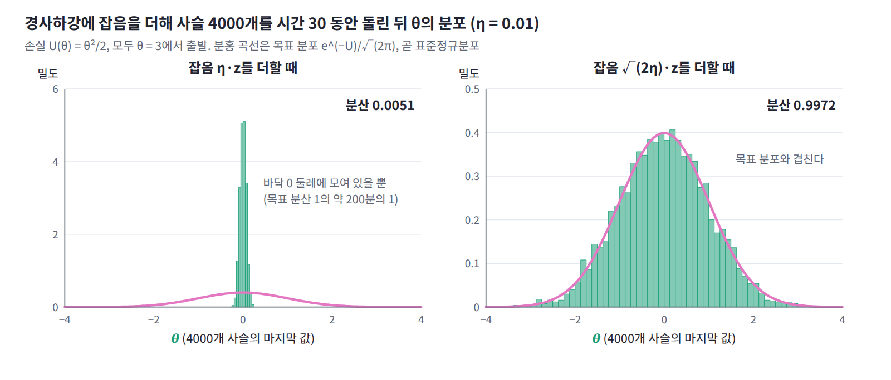
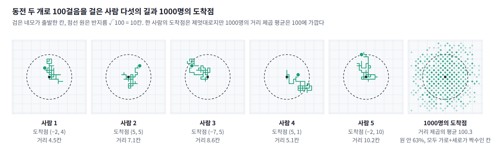
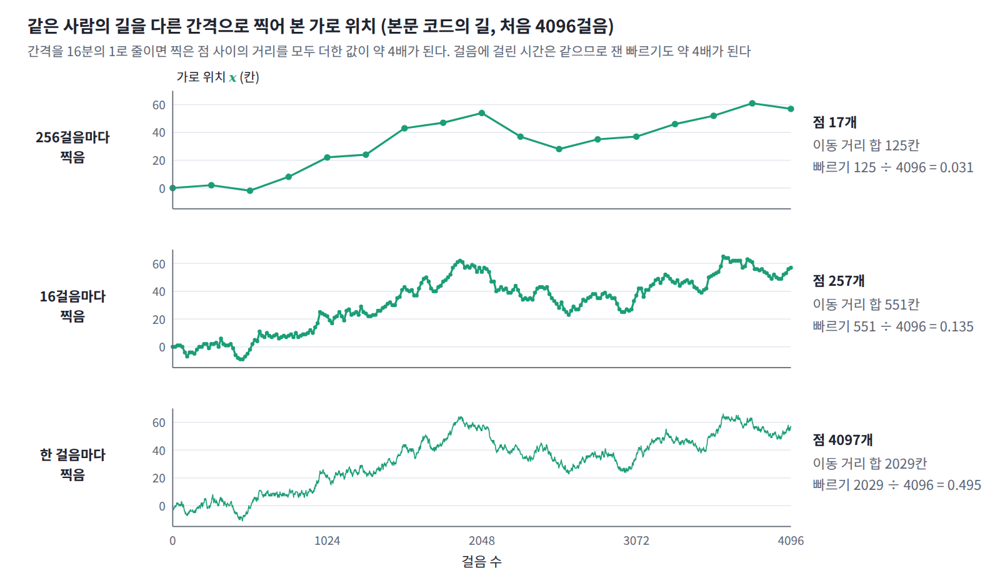

14장 — 브라운 운동, 랑주뱅, 포커–플랑크
이 장의 물음
경사하강에 잡음을 조금 섞으면 이상한 일이 생긴다. 손실 U(θ) = θ²/2를 θ = 3에서 출발해 학습률 η = 0.01로 경사하강하면 θ는 바닥 0으로 모여들어 멈춘다. 한 걸음마다 표준정규 잡음에 η를 곱해 더하면 θ는 0 둘레에서 조금 흔들릴 뿐이고, 마르코프 사슬(따로 돌리는 샘플러 하나) 4000개로 재 보면 그 분산은 0.0051이다. 그런데 잡음에 η 대신 √(2η)를 곱하면 흔들림이 갑자기 커져 분산이 0.997이 되고, θ의 값들을 모으면 표준정규분포, 곧 e^(−U)에 비례하는 분포가 나온다. 학습률을 0.1로 바꿔 보면 차이가 더 분명하다. η를 곱한 잡음에서는 분산이 0.052로 학습률을 따라 변하지만, √(2η)를 곱한 잡음에서는 1.04로 거의 그대로다. 웰링과 테(2011)는 이 성질을 큰 데이터의 베이즈 학습에 썼고, 논문 요약에 「표준적인 확률적 경사 최적화 알고리즘에 알맞은 양의 잡음을 더하면, 걸음 크기를 줄여 갈 때 반복값들이 참 사후분포의 샘플로 수렴함을 보인다」고 적었다. 이 방법이 SGLD(stochastic gradient Langevin dynamics)다.

확산 모델에서도 같은 모양이 나온다. DDPM(호·자인·아빌 2020)은 한 단계마다 샘플에 √(1 − ε)를 곱하고 표준편차 √ε인 잡음을 더한다(논문의 기호는 β이지만 역온도 β와 겹치므로 이 장에서는 ε로 쓴다). ε가 작으면 √(1 − ε) ≈ 1 − ε/2이므로, 이 단계는 U(x) = |x|²/2를 걸음 ε/2로 경사하강하면서 잡음 √(2 × ε/2)를 더하는 것과 같다. 분산을 끝없이 키우는 분산 폭발형과 달리 샘플을 원점 쪽으로 조금씩 당기므로, ε를 10⁻⁴에서 0.02까지 늘려 가며 1000단계를 지나면 원래 이미지는 0.0064배만 남고 분포는 데이터와 상관없이 거의 표준정규분포가 된다. 두 경우 모두 「에너지의 내리막으로 η만큼 가고, √(2η)만큼 흔든다」는 규칙을 쓰고, 도착하는 분포는 e^(−에너지)에 비례한다. 잡음은 왜 걸음의 제곱근만큼이어야 하고, 이 규칙은 왜 하필 볼츠만 분포에 도착할까?
이 물음에 답하려면 몇 가지를 차례로 알아야 한다.
- 잡음을 조금씩 더해 가는 샘플 하나는 어떤 길을 걷고, 그 길의 빠르기는 얼마라고 말할 수 있을까?
- 그런 샘플을 아주 많이 모으면, 그 분포는 어떤 규칙에 따라 바뀔까?
- 내리막으로 끄는 힘과 잡음이 함께 있을 때 분포는 어디에 도착하고, 잡음의 크기는 그 도착점을 어떻게 정할까?
- 모멘텀을 쓰는 경사하강처럼 샘플이 운동량(물리량 p. 최적화 기법인 모멘텀과 영어 이름 momentum이 같다)을 가지면, 잡음은 얼마나 넣어야 할까?
랜덤 워크: 동전으로 걷는 사람들의 분포
첫머리의 두 규칙은 모두 샘플에 잡음을 조금씩 더해 간다. 내리막으로 끄는 힘은 잠시 빼고, 잡음만 더해 가는 가장 단순한 경우부터 보자. 잡음을 한 번씩 더할 때마다 샘플 하나는 어디로 갈까? 그리고 그런 샘플을 아주 많이 모으면, 그 분포는 어떤 규칙에 따라 바뀔까?
역사: 피어슨의 편지
1905년 여름 통계학자 칼 피어슨은 『네이처』에 편지를 보내, 한 사람이 일정한 거리를 곧게 걷고 아무 방향으로나 돌아 다시 같은 거리를 걷기를 n번 되풀이할 때 출발점에서 얼마나 떨어져 있을지를 물으며 이것을 「랜덤 워크」라 불렀다. 레일리 경이 곧 답을 보냈고, 피어슨은 그 답을 받아 들고 「트인 들판에서 제 발로 설 수 있는 술 취한 사람을 찾으려면 출발점 근처가 가장 가능성 높은 곳」이라는 교훈을 적었다.
동전을 던져 격자 위를 걷기
정사각 격자의 한가운데 칸에 100만 명이 서 있다. 신호가 울릴 때마다 모든 사람이 동전 두 개를 던져 위, 아래, 왼쪽, 오른쪽 가운데 하나를 똑같은 확률 1/4로 고르고 그쪽으로 한 칸 옮겨 간다. 사람마다 동전을 따로 던지므로 같은 칸에서 출발해도 곧 흩어진다.
이처럼 걸음마다 따로 뽑은 무작위 이동을 더해 가는 길을 랜덤 워크 (무작위 걸음, random walk)라 한다.
한 사람의 길은 제멋대로다. 왼쪽으로 세 번 연달아 갔다가 오른쪽으로 두 번 돌아오기도 하고, 100걸음 뒤에 출발점에 서 있기도 하고 15칸 떨어진 곳에 가 있기도 하다. 그러나 100만 명을 모아 보면 규칙이 보인다. n걸음 뒤 출발점에서 떨어진 거리 제곱의 평균과, 출발점에 서 있는 사람의 비율, 출발점에서 가로로 10칸 떨어진 칸 (10, 0)에 서 있는 사람의 비율을 재어 보자. 옆에는 한가운데 칸에만 1을 두고 모든 칸을 동시에 이웃 넷의 평균으로 바꾸기를 n번 되풀이했을 때 그 칸에 남는 값을 나란히 적었다.
| 걸음 수 n | 거리 제곱의 평균 | 원점에 선 비율 | 이웃 평균: 원점 | (10, 0)에 선 비율 | 이웃 평균: (10, 0) |
|---|---|---|---|---|---|
| 99 | 99.07 | 0 | 0 | 0 | 0 |
| 100 | 100.10 | 0.00622 | 0.00633 | 0.00228 | 0.00235 |
| 400 | 400.00 | 0.00161 | 0.00159 | 0.00117 | 0.00124 |
세 가지가 눈에 띈다. 첫째, 거리 제곱의 평균이 걸음 수와 거의 같다. 100걸음 동안 한 칸씩 쉬지 않고 움직였는데도 출발점에서 떨어진 거리는 평균적으로 √100 = 10칸 남짓이다. 둘째, 사람들의 비율이 이웃 평균을 되풀이한 값과 소수 넷째 자리에서만 조금 다를 뿐 거의 같다. 한 사람 한 사람은 동전에 따라 제멋대로 걸었을 뿐, 누구도 이웃과 평균을 내지 않았는데 말이다. 셋째, 99걸음 뒤에는 원점에도 (10, 0)에도 아무도 없다. 칸을 바둑판처럼 두 색으로 칠하면 한 걸음마다 반드시 다른 색 칸으로 건너가므로, 홀수 걸음 뒤에는 모두 출발점과 다른 색 칸에 서 있다. 옆에 적은 이웃 평균의 값도 99번째에는 두 칸 모두 0이어서, 칸의 색이 똑같이 번갈아 빈다.

그렇다면 한 사람의 걸음과 모든 칸의 동시 평균은 무슨 관계일까?
사람들의 분포는 이웃 평균을 따른다
n + 1걸음 뒤 어떤 사람이 칸 x에 서 있으려면, n걸음 뒤 x의 이웃 네 칸 가운데 하나에 서 있다가 x 쪽을 가리키는 동전이 나와야 한다. 그 동전이 나올 확률은 1/4이고 동전은 그 사람이 지금까지 어디를 걸어왔는지 기억하지 않으므로, n + 1걸음 뒤 x에 있을 확률은 이웃 네 칸에 있을 확률에 각각 1/4을 곱해 더한 것이다.
오른쪽 식은 칸마다 이웃 넷의 평균을 내는 규칙 그대로다. 한 사람이 서 있을 확률의 분포는 이웃 평균 규칙을 정확히 따르고, 100만 명의 비율은 그 확률을 표본으로 잰 것이어서 표본 오차만큼만 다르다. 이웃 평균의 규칙은 거꾸로 보면 모든 칸이 제 값을 네 등분해 이웃 네 칸에 하나씩 나눠 주는 것과 같은데, 한 칸의 값을 그 칸에 서 있을 확률로 읽으면 이것은 「그 칸에 선 사람이 네 방향 가운데 하나로 한 칸 옮겨 간다」는 말과 같다. 값을 나눠 주는 결정론적 규칙과 한 사람의 무작위한 걸음은 같은 것을 두 쪽에서 본 것이다.
한 사람의 빠르기
그런데 100걸음을 걸어 10칸 간 사람은 얼마나 빨리 움직인 것일까? 한 걸음에 한 칸이니 빠르기는 1이라고 해야 할까, 100걸음에 10칸이니 0.1이라고 해야 할까? 빠르기를 따지기 전에, 한 사람이 걸음 수에 비해 얼마나 멀리 가는지부터 살펴보자.
격자 위에서 거리 제곱의 평균이 걸음 수와 거의 같았던 이유는 한 사람의 걸음으로 읽을 수 있다. n걸음 뒤 위치는 걸음 s₁, s₂, …, sₙ의 합이므로 거리의 제곱은 걸음마다의 제곱 |sᵢ|² = 1의 합 n에, 서로 다른 두 걸음의 곱 sᵢ·sⱼ의 합을 더한 것이다. 두 걸음은 서로 따로 던진 동전으로 정해지고 한 걸음의 평균 이동은 0이므로, 곱의 평균도 0이 되어 교차항이 모두 사라진다. 그래서 거리 제곱의 평균은 정확히 n이다. 여기서 쓴 것은 한 걸음의 평균 이동이 0이라는 것과 걸음들이 서로 독립이라는 것 두 가지뿐이다. 동전 대신 한 걸음에 정규분포를 따르는 변위를 쓰든 걸음 크기를 제멋대로 섞든, 평균이 0이고 서로 독립이면 분산이 걸음마다 더해진다.
그러면 이 사람은 얼마나 빨리 움직인 것일까? 한 사람이 100만 걸음을 걷는 동안의 가로 위치를 Δ걸음 간격으로 재어, 한 구간에서 가로로 옮겨 간 거리의 절댓값을 Δ로 나눈 평균을 구하면 다음과 같다.
| 재는 간격 Δ (걸음) | 1 | 4 | 16 | 64 | 256 | 1024 |
|---|---|---|---|---|---|---|
| 가로 변위의 절댓값 ÷ Δ (평균) | 0.500 | 0.273 | 0.139 | 0.070 | 0.035 | 0.017 |
재는 간격을 네 배로 늘릴 때마다 빠르기가 절반이 된다. 한 구간에 옮겨 간 거리가 √Δ에 비례하므로 빠르기는 √Δ / Δ = 1/√Δ에 비례하는 것이다. 거꾸로 말하면 간격을 줄일수록 잰 빠르기는 한없이 커진다. 이 사람의 빠르기는 재는 간격에 따라 달라지므로 하나의 값으로 말할 수 없다.

코드로 확인하기
앞의 격자 걷기와 빠르기 측정을 그대로 돌리는 코드다. 100만 명이 동전 두 개로 네 방향 가운데 하나를 골라 걷는 동안, 한가운데 칸의 1을 이웃 넷의 평균으로 되풀이해 바꾼 값과 비교한다. 이어서 한 사람의 길을 간격을 바꿔 가며 재어 빠르기가 간격의 제곱근에 반비례하는지 본다.
import numpy as np
rng = np.random.default_rng(0)
M = 1_000_000 # 걷는 사람 100만 명, 모두 원점에서 출발
steps = np.array([(1, 0), (-1, 0), (0, 1), (0, -1)], dtype=np.int16)
pos = np.zeros((M, 2), dtype=np.int16)
L = 241; c = L // 2 # 비교용: 한 칸의 1을 이웃 넷의 평균으로 되풀이
u = np.zeros((L, L)); u[c, c] = 1.0
def neighbor_avg(u):
return (np.roll(u, 1, 0) + np.roll(u, -1, 0) + np.roll(u, 1, 1) + np.roll(u, -1, 1)) / 4
for n in range(1, 401):
pos += steps[rng.integers(0, 4, M)] # 사람마다 동전 두 개로 네 방향 중 하나를 골라 한 칸
u = neighbor_avg(u)
if n in (99, 100, 400):
r2 = (pos.astype(np.int64)**2).sum(1).mean()
at0 = np.mean((pos[:, 0] == 0) & (pos[:, 1] == 0))
at10 = np.mean((pos[:, 0] == 10) & (pos[:, 1] == 0))
print(f"n = {n}: 거리 제곱의 평균 {r2:.2f} | 원점에 선 비율 {at0:.5f} (이웃 평균 {u[c, c]:.5f}) | "
f"(10, 0)에 선 비율 {at10:.5f} (이웃 평균 {u[c + 10, c]:.5f})")
# 한 사람의 길: 100만 걸음 동안의 가로 위치를 Δ걸음 간격으로 재어 「빠르기」를 구한다
x = np.cumsum(steps[rng.integers(0, 4, 1_000_000)][:, 0])
for d in (1, 4, 16, 64, 256, 1024):
print(f"Δ = {d:4d}걸음: 평균 |가로 변위| / Δ = {np.abs(x[d::d] - x[:-d:d]).mean() / d:.4f}")
# n = 99: 거리 제곱의 평균 99.07 | 원점에 선 비율 0.00000 (이웃 평균 0.00000) | (10, 0)에 선 비율 0.00000 (이웃 평균 0.00000)
# n = 100: 거리 제곱의 평균 100.10 | 원점에 선 비율 0.00622 (이웃 평균 0.00633) | (10, 0)에 선 비율 0.00228 (이웃 평균 0.00235)
# n = 400: 거리 제곱의 평균 400.00 | 원점에 선 비율 0.00161 (이웃 평균 0.00159) | (10, 0)에 선 비율 0.00117 (이웃 평균 0.00124)
# Δ = 1걸음: 평균 |가로 변위| / Δ = 0.5004
# Δ = 4걸음: 평균 |가로 변위| / Δ = 0.2730
# Δ = 16걸음: 평균 |가로 변위| / Δ = 0.1391
# Δ = 64걸음: 평균 |가로 변위| / Δ = 0.0704
# Δ = 256걸음: 평균 |가로 변위| / Δ = 0.0350
# Δ = 1024걸음: 평균 |가로 변위| / Δ = 0.0169
사람들의 비율은 이웃 평균의 값과 표본 오차 안에서 같고, 99걸음 뒤에는 원점과 (10, 0)이 모두 비어 있다. 한 사람의 빠르기는 재는 간격을 네 배로 늘릴 때마다 절반이 된다.
ML에서: 샘플 하나와 분포 전체
확산 모델을 학습하는 코드도 이 두 쪽을 오간다. 코드는 이미지 한 장에 잡음을 한 번씩 더할 뿐이어서, 한 사람이 동전을 던져 한 칸씩 걷는 것과 같다. 그러나 모델이 배워야 하는 것은 그런 이미지들을 모두 모은 분포가 잡음을 더할수록 어떻게 번져 가는지다. 한 장 한 장의 길은 제멋대로여도, 모은 분포는 이웃 평균처럼 결정론적인 규칙을 따르기 때문에 배울 수 있다.